🐻 Мечо Пух 🍯
Мечо Пух (на английски: Winnie-the-Pooh) е плюшено мече, герой от разказите и стиховете на английския писател Алън Милн. Това е един от най-известните литературни герои от книгите за деца. Издадени са два сборника с разкази: „Мечо Пух“ (1926) и „Къщичката в къта на Пух“ (1928), както и отделни стихотворения. Разказите са отделни, могат да се четат и филмират поотделно, а книгите се издават заедно или поотделно.
През втората половина на 20 век за Мечо Пух са направени анимационни филми от „Дисни“ и „Союзмультфильм“, с което той става особено популярен.
Егмонт България издава илюстровани книги с Мечо Пух по лиценз на „Дисни“, а месечното списание „Мечо Пух“ излиза от 1999 година насам.
От предговора на книгата Мечо Пух става ясно, че плюшеното мече на Кристофър Робин се казва Едуард, а момчето просто го преименува на Мечо Пух.
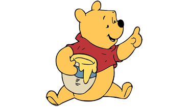
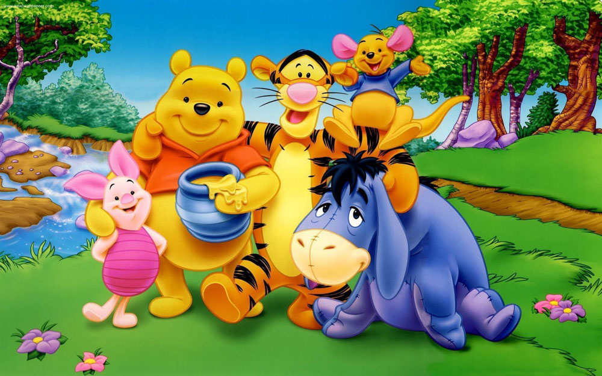
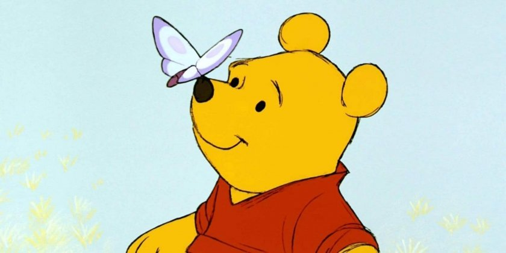
10 интересни факти за Мечо Пух
- Името идва от мечка, купена от канадски войник по време на Първата световна война, на име Уини. Тя е кръстена на родния му град Уинипег
- Войникът оставил Уини в лондонска зоологическа градина, където била видяна от сина на Милн Кристофър Робин.
- „Мечо Пух“ е една от най-доходоносните истории на Disney. Списание Forbes определи преди време мечето за втория най-доходоносен герой с 5.6 млрд. долара от глобални продажби. Мики Маус е на първо място с 5.8 млрд. долара.
- Когато Disney придобива правата за историята на Милн през 1961 г., всички тиренца отпадат.
- Преди да напише книгите, Милн е войник по време на Първата световна война. След като се бие на фронтовите линии, по време на битката при Сома, писателят се присъединява към отдела за тайна пропаганда, известен като MI7b през 1916 г.
- Латинският превод на „Мечо Пух“ поставя рекорд на New York Times. “Winnie Ille Pu” от 1958 г. остава 20 седмици в класацията на New York Times на най-продаваните книги и е единствената книга на латински, която постига това.
- Оригиналните животни от „Мечо Пух“ могат да бъдат видени в Обществената библиотека на Ню Йорк с изключение на Ру, изгубен около 1930 г.
- Култовата червена тениска на Мечо Пух не е идея на Disney. Милн първоначално продал правата за мърчъндайзинг за Пух в САЩ и Канада на продуцента Стивън Слезингър, който първи пуска плюшената играчка Мечо Пух с червена тениска през 1932 г. Когато вдовицата на Слезингър дава лицензионните права на Disney през 1961 г., киностудиото запазва дизайна.
- Книгите и видеата с Мечо Пух са преведени на 29 езика.
- Къщата на Милн в Съсекс, вдъхновила историите за Пух, беше обявена за продажба през март 2016 г. и намери собственик на цена от 1.9 млн. паунда (2.20 млн. евро).
Мислите на Мечо Пух
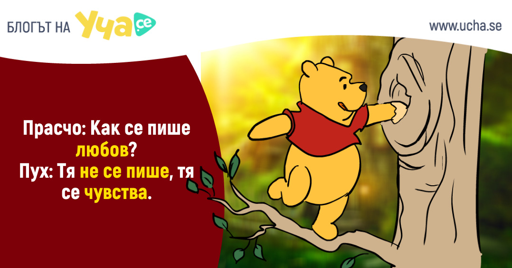
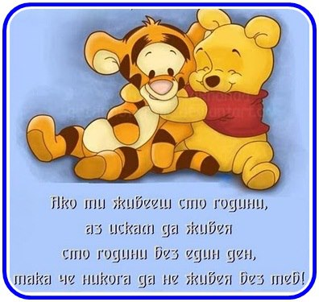
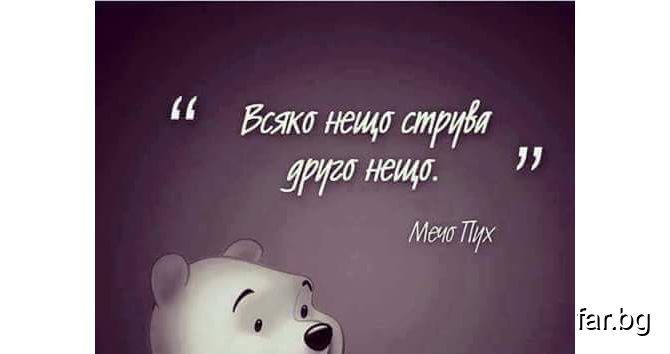
Герои
| Име |
Как изглежда? |
Инересен факт |
| Мечо Пух |
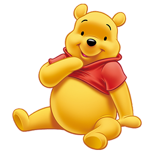 |
Жълта мечка, обичаща мед |
| Прашчо |
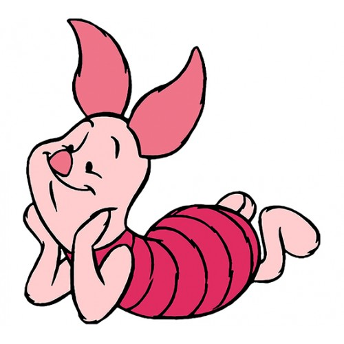 |
Той е мъничък и розов, с розова раирана дрешка. |
| Йори |
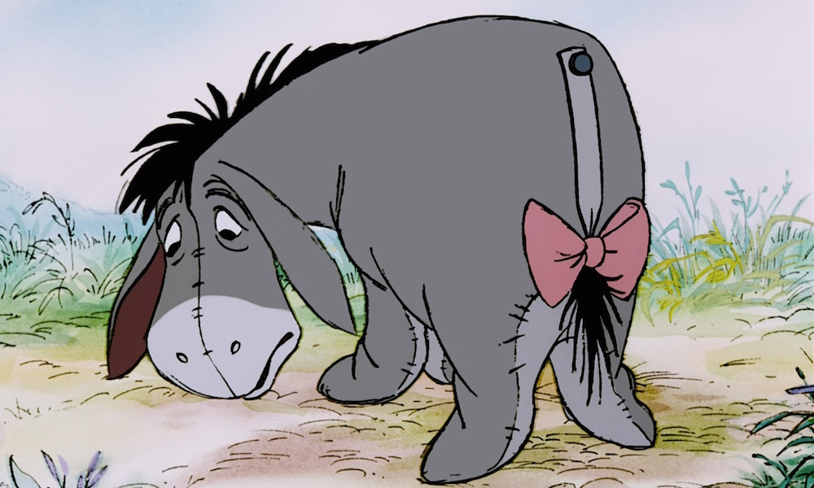 |
Сиво магаре, винаги имащо на опашката червена панделка |
| Тигърчо |
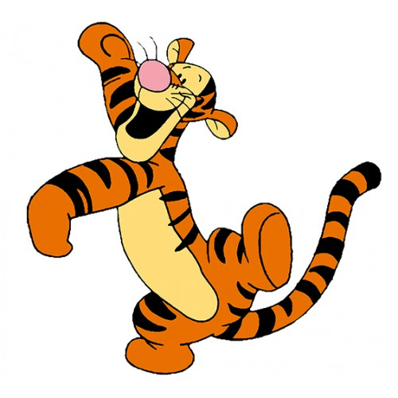 |
Тигъра е единствен и неповторим, обича да подскача |
| Ру |
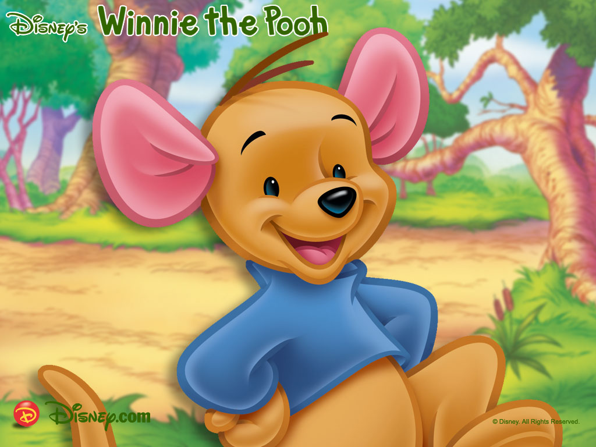 |
Ру, малкото бебе кенгуру, весело и игриво |
| Кристофър Робин |
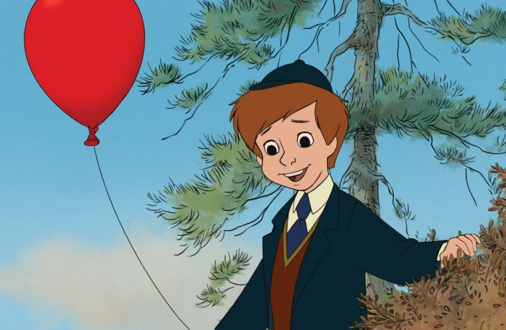 |
Водят безкрайни приключения с Мечо Пух |
🐾 Интересно видео за Мечо Пух